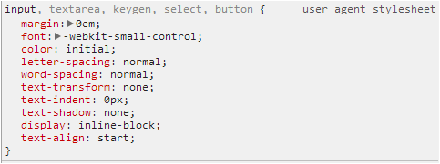
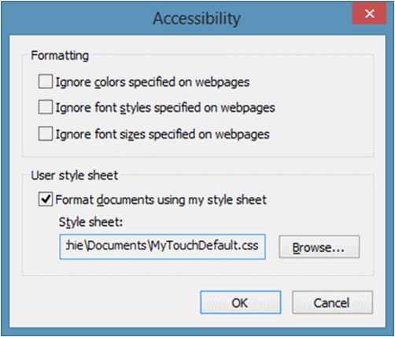
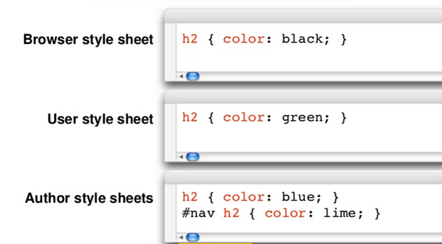

Created by Vladimir Zhydal
p {
color: red;
}
p {
font-size: 12px;
}
p {
line-height: 15px;
}
p {
color: red;
font-size: 12px;
line-height: 15px;
}
h1 {
color: red;
font-weight: bold;
}
h2 {
color: red;
font-weight: bold;
}
h3 {
color: red;
font-weight: bold;
}
h1, h2, h3 {
color: red;
font-weight: bold;
}
| Pattern | Meaning | Level |
|---|---|---|
| * | any element | 2 |
| E | an element of type E | 1 |
| E.warning | an E element whose class is "warning" | 1 |
| E#myid | an E element with ID equal to "myid" | 1 |
Use CSS classes where it’s possible, to make your styles reusable on the page.
| Pattern | Meaning | Level |
|---|---|---|
| E[foo] | an E element with a "foo" attribute | 2 |
| E[foo="bar"] | an E element whose "foo" attribute value is exactly equal to "bar" | 2 |
| E[foo~="bar"] | an E element whose "foo" attribute value is a list of whitespace-separated values, one of which is exactly equal to "bar" | 2 |
| E[foo|="en"] | an E element whose "foo" attribute has a hyphen-separated list of values beginning (from the left) with "en" | 2 |
| Pattern | Meaning | Level |
|---|---|---|
| E[foo^="bar"] | an E element whose "foo" attribute value begins exactly with the string "bar" | 3 |
| E[foo$="bar"] | an E element whose "foo" attribute value ends exactly with the string "bar" | 3 |
| E[foo*="bar"] | an E element whose "foo" attribute value contains the substring "bar" | 3 |
| Pattern | Meaning | Level |
|---|---|---|
| E:link E:visited |
an E element being the source anchor of a hyperlink of which the target is not yet visited (:link) or already visited (:visited) | 1 |
| E:active E:hover E:focus |
an E element during certain user actions | 1 and 2 |
| E:target | an E element being the target of the referring URI | 3 |
| Pattern | Meaning | Level |
|---|---|---|
| E:lang(fr) | an element of type E in language "fr" (the document language specifies how language is determined) | 2 |
| E:enabled E:disabled |
a user interface element E which is enabled or disabled | 3 |
| E:checked | a user interface element E which is checked (for instance a radio-button or checkbox) | 3 |
| E:not(s) | an E element that does not match simple selector s | 3 |
| Pattern | Meaning | Level |
|---|---|---|
| E:root | an E element, root of the document | 3 |
| E:nth-child(n) | an E element, the n-th child of its parent | 3 |
| E:nth-last-child(n) | an E element, the n-th child of its parent, counting from the last one | 3 |
| E:nth-of-type(n) | an E element, the n-th sibling of its type | 3 |
| Pattern | Meaning | Level |
|---|---|---|
| E:nth-last-of-type(n) | an E element, the n-th sibling of its type, counting from the last one | 3 |
| E:first-child | an E element, first child of its parent | 2 |
| E:last-child | an E element, last child of its parent | 3 |
| E:first-of-type | an E element, first sibling of its type | 3 |
| Pattern | Meaning | Level |
|---|---|---|
| E:last-of-type | an E element, last sibling of its type | 3 |
| E:only-child | an E element, only child of its parent | 3 |
| E:only-of-type | an E element, only sibling of its type | 3 |
| E:empty | an E element that has no children (including text nodes) | 3 |
| Pattern | Meaning | Level |
|---|---|---|
| E::first-line | the first formatted line of an E element | 1 |
| E::first-letter | the first formatted letter of an E element | 1 |
| E::before | generated content before an E element | 2 |
| E::after | generated content after an E element | 2 |
| Pattern | Meaning | Level |
|---|---|---|
| E F | an F element descendant of an E element | 1 |
| E > F | an F element child of an E element | 2 |
| E + F | an F element immediately preceded by an E element | 2 |
| E ~ F | an F element preceded by an E element | 3 |
The key selector is the right-most part of a larger CSS selector. This is what the browser looks for first.
Browser apply style sheets to all web documents. These are referred to as a “default” browser style sheet.
Most browsers allow user to apply their own style sheets within the browser.

There are four steps to determine which CSS rules will “win”.
Gather all the declarations that apply to an element and property from browser, author and user style sheets.
Sort the gathered declarations according to:
If declarations have the same origin or importance then the declaration’s selectors need to be scored, to see which declaration will “win”
“A” will always beat “B”, which will always beat “C”, which will always beat “D”.
If two declarations have the same importance, origin and specify, the later specified declaration wins
The CSS box model describes the rectangular boxes that are generated for elements in the document tree and laid out according to the visual formatting model.
In CSS, the adjoining margins of two or more boxes can combine to form a single margin.
Margins that combine this way are said to collapse, and the resulting combined margin is called a collapsed margin.
Do not collapse in most cases...
The CSS visual formatting model is the algorithm used to process a document and display it on a visual media.
the part of the CSS visual formatting model
creates boxes from the document's elements
affects how the visual formatting is done
depends of the value of the display CSS property
visually formatted as a block
intended to be vertically stacked
display: block, list-item, table
participates in a block formatting context
generates at least one block-level box (principal block-level box)
is a box that contains only other block-level boxes, or creates an inline formatting context
A block-level box may also be a block container box.
describes how the box will behave with its parents and sibling
how the box will interact with its descendants
Block-level boxes that also are block container boxes are called block boxes.
supplementary boxes
cannot be styled using CSS selectors
use the inherit value or the initial value of css properties
Some inline text followed by a paragraph
followed by more inline text.
display: inline, inline-block, inline-table
distributed in lines with other inline-level content
generate inline-level boxes
Inline boxes are both inline-level boxes and boxes that participate in their container's inline formatting context
Inline-level boxes that do not participate in an inline formatting context
are never split in several boxes
generated by: replaced inline-level elements, by elements with a calculated display value (inline-block or inline-table)
The text in the span can be split
in several lines as it is an inline box.
The text in the span cannot be split
in several lines as it is an inline-block box.
supplementary boxes
cannot be styled using CSS selectors
use the inherit value or the initial value of css properties
TODO: Add an example
boxes are laid out one after the other (vertically or horizontally)
the boxes are drawn at the exact position defined by the normal flow layout.
the boxes are drawn with an offset defined by the top, bottom, left and right CSS properties.
floating boxes are positioned at the beginning or end of the current line
anything within the normal flow flows along the edge of the floating boxes
specifies whether an element can be next to floating elements that precede it or must be moved down (cleared) below them
applies to both floating and non-floating elements
Element boxes are positioned within a formatting context, which, by default, is provided by the box generated by a parent element.
At-rules are instructions or directives to the CSS parser.
'-' + vendor specific identifier + '-' + meaningful name
| Prefix | Organisation |
|---|---|
| -ms- | Microsoft |
| -moz- | Mozilla Foundation (Gecko-based browsers) |
| -o- | Opera Software |
| -webkit- | Safari (and other WebKit-based browsers) |
div {
-webkit-border-radius: 3px;
-moz-border-radius: 3px;
border-radius: 3px;
}
| Unit | Description |
|---|---|
| % | percentage |
| em | 1em is equal to the current font size. 2em means 2 times the size of the current font. |
| ex | one ex is the x-height of a font (x-height is usually about half the font-size) |
| px | pixels (a dot on the computer screen) |
| Unit | Description |
|---|---|
| pt | point (1 pt is the same as 1/72 inch) |
| pc | pica (1 pc is the same as 12 points) |
| in | inch |
| cm | centimeter |
| mm | millimeter |
| Recommended | Occasional use | Not recommended | |
|---|---|---|---|
| Screen | em, px, % | ex | pt, cm, mm, in, pc |
| em, cm, mm, in, pt, pc, % | px, ex |
| Unit | Description |
|---|---|
| rem | is the font size of the root element of the document |
| vw | 1/100th of the window's width |
| vh | 1/100th of the window's height |